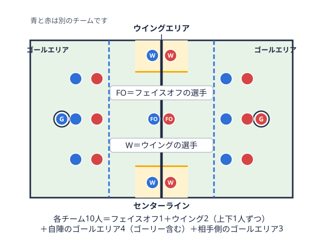
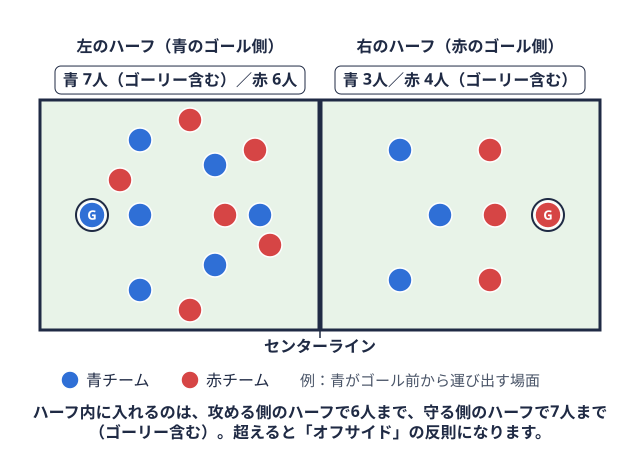

怪我予防 2026-11-23
ラクロスの腰痛予防｜シュートやフェイスオフで腰を痛める理由と受診の目安・復帰の考え方
この記事の内容
ラクロスで腰に負担がかかりやすい場面「ただの腰痛」と「腰椎分離症」の違い受診から復帰までの考え方予防の考え方部として整えておきたい運用面よくある質問まとめ出典「シュートを打つたびに腰が痛い」「フェイスオフ男子の試合開始や得点後に、センターで2人が向かい合ってボールを奪い合う再開方法。  用語辞典で見るを振る、体をひねる、低い姿勢で構える、といった動作が多い競技です。腰の違和感を「いつものこと」として流している部員も少なくないかもしれません。
用語辞典で見るを振る、体をひねる、低い姿勢で構える、といった動作が多い競技です。腰の違和感を「いつものこと」として流している部員も少なくないかもしれません。
この記事では、現役部員、主将、マネージャーに向けて、腰痛が起きやすい場面、ただの疲れではない可能性、受診の目安、復帰の考え方、予防の方向性を整理します。内容は、医療情報サイトや、米国ラクロス協会（US Lacrosse）が2026年1月に公開した医師の解説をもとにしています。
なお、日本の大学ラクロス部員を対象にした腰痛の発生率や再発率は、今回確認できた公開資料の範囲では見つかりませんでした。米国の記事は、主に12〜20歳の選手を想定した内容です。大学生にそのまま当てはまるとは限らない点にご注意ください。ここで書くのは一般的な情報で、診断や治療を代替するものではありません。痛みが続くとき、判断に迷うときは整形外科を受診してください。
ラクロスで腰に負担がかかりやすい場面
米国ラクロス協会のサイトに2026年1月26日付で掲載された、スポーツ医学の医師（MedStar Sports Medicine）による解説では、腰の背骨の一部（椎弓の関節突起間部）に起きる疲労性の損傷について、繰り返される「腰を反らす動き」と「ひねる動き」が関わるとされています。具体的な場面として、大きく振りかぶるシュートとフェイスオフが挙げられています。
ここで、競技の動きから編集部が整理した、腰に負担がかかる可能性のある場面を挙げます。ラクロスの統計で裏づけられたものではなく、あくまで動作の整理です。
- 大きく振りかぶるシュート: 上体を反らし、そこから体をひねって振り抜く動き
- フェイスオフ: 低く前かがみの姿勢で構え、ボールを奪い合う場面
- グラウンドボール地面に転がっているボール、またはそれを拾い合うプレー。先に確保したほうが攻撃できる。用語辞典で見る: 低い姿勢のままボールに寄り、体勢を崩しながら拾う場面
- ダッジ攻める側の選手が、1対1で守る相手をかわして前へ出るプレー。シュートやパスの機会を作る。用語辞典で見るやクリア守る側がボールを確保し、自陣から運び出して攻撃につなげるプレー。

用語辞典で見るでの切り返し: 走りながら急に向きを変え、体幹をひねる場面 - 長時間の走り込みやシュート練習: 同じ動作を大量に繰り返す日
用語に不慣れなときは、サイト内の用語辞典も参照してください。投げ方や打ち方の基本はスローの基礎やシュートの基礎で扱っています。フェイスオフの練習はフェイスオフの練習法にまとめています。
「ただの腰痛」と「腰椎分離症」の違い
腰痛の原因はさまざまで、筋肉の疲れや張りが原因の場合もあれば、骨に負担がかかっている場合もあります。部活動で特に知っておきたいのが、腰椎分離症です。
腰椎分離症とは
医療情報サイトのメディカルノートでは、腰椎分離症を、過度なスポーツや腰の回旋などの負担による疲労骨折と説明しています。ジャンプや腰をひねる動きの繰り返しで、腰の骨の一部が疲労骨折を起こす状態で、多くは第5腰椎に起こるとされています。多くは腰痛をきっかけに見つかり、上体を後ろに反らすと痛む傾向があると紹介されています。
同ページには、一般の人の発症率は約5%、スポーツ選手では30〜40%という数字も載っています（最終更新2017年4月、出典は記事末尾）。ただし、これはスポーツ全般の数字で、ラクロスに限ったものではありません。
米国ラクロス協会の記事では、この種の損傷は、成長期のアスリートの腰痛の約15〜30%を占めるとされています。また、リスクがとくに高いのは12〜20歳の男子ラクロス選手と書かれています。
損傷には段階がある
米国の記事では、段階が3つに分けて説明されています。
- ストレス反応: 骨に微細な損傷やむくみがあるが、骨折の線はまだ見えない段階
- 疲労骨折: 骨に実際の割れが生じた段階
- すべり症: 最も重い形で、背骨がずれて不安定になる段階
早い段階で見つかれば、多くはよく治るとされています。反対に、痛みを我慢して続けると、より重い段階に進む可能性があります。メディカルノートでも、治療をおろそかにすると分離すべり症へ進む場合があるという趣旨の説明があります。
こんな症状は一度受診を検討する
米国の記事では、次のような場合に評価を受けることが勧められています。
- 腰痛が2〜3週間以上続いている
- パフォーマンスが落ちるほど痛い
- 活動を続けるうちに悪化している
- 腰を反らす、シュートを打つ、全力で走る、長く走ると痛みが増し、休むと軽くなる
- 成長期の急な身長の伸びや、練習量の増加、通年で競技を続けた後に出てきた
メディカルノートでも、治療せず長く経過すると、神経が圧迫されて足の痛みやしびれが出ることがあるとされています。足のしびれ、力が入りにくい、といった症状がある場合は、早めに医療機関へ相談してください。
米国の記事は「青年期の持続する腰痛は普通ではなく、軽視してはならない」という趣旨で結ばれています。大学生の部員には成長期とは違う面もありますが、「そのうち治る」と決めつけない姿勢は参考になります。
受診から復帰までの考え方
検査と治療の流れ
腰椎分離症の検査について、メディカルノートは、レントゲン、CT、MRIなどを挙げています。初期の疲労骨折はレントゲンでは分かりにくく、MRIで見つかることがあると説明されています。米国の記事でも、レントゲンでは早期のストレス反応を見逃すことがあり、放射線を使わないMRIが好まれつつあるとされています。
治療は、多くの場合、手術ではなく保存療法（安静やリハビリなど）で進められます。メディカルノートでは、初期であれば安静や鎮痛剤などの保存療法が有効で、運動は一時的に中止し、2〜3か月程度とされています。腰の安静のためにコルセットを使うこともあります。一方、米国の記事は、コルセットが痛みを和らげる場合があるものの、治癒への効果は明確でないと述べています。このように情報源によって書き方が異なるため、実際の対応は診察した医師の指示を優先してください。
復帰は「期間」ではなく「状態」で判断する
米国の記事は、復帰を時間ではなく症状と機能で判断するとしています。回復には6週間から6か月以上かかる場合があるとも書かれています。メディカルノートも、運動再開は症状と画像所見を確認しながら判断するとしています。
これを部活の現場に置き換えると、次のような考え方になります。以下は編集部の整理で、特定の研究が示した手順ではありません。
- 日常生活で痛みがなく、体幹まわりのリハビリを痛みなく行える
- 走る、軽いスティックワークなど、腰を反らさない・ひねらない動きから再開
- 思い切ったシュートやフェイスオフなど、腰への負担が大きい動作は、医師やトレーナーに確認しながら最後に段階的に戻す
痛みが出たら、前の段階に戻す判断も必要です。チームの勝敗がかかる時期でも、復帰の判断を本人の気持ちだけに任せないルールを決めておくと、見落としが減ります。
休んでいる間にできること
米国の記事では、リハビリ中もチームとのつながりを保つことが望ましいとされています。映像で相手チームの動きを確認する、記録やスカウティングを担当する、といった形で関わる方法があります。映像の見方は試合映像の分析入門を参照してください。
予防の考え方
予防についても、ラクロス選手を対象に効果を検証した研究は、今回の調査では確認できませんでした。以下は、医療情報や米国ラクロス協会の記事で述べられている一般的な方向性です。
体幹と股関節まわりを整える
米国の記事は、予防として、体幹の筋力と動的な柔軟性を重視した年間を通じたコンディショニングを挙げています。リスク要因としても、体幹の弱さ、股関節や下肢の硬さが挙げられています。メディカルノートも、腰痛予防には腹筋・背筋の強化などが大切だとしています。
具体的なメニューは、サイト内の体幹トレーニングメニューや筋トレメニューが参考になります。太もも裏の硬さも腰への負担に関係しうるとされており、肉離れの予防とあわせて肉離れの予防記事も読んでみてください。ウォームアップの流れはウォームアップ解説にまとめています。
練習量を管理する
米国の記事は、リスク要因として、シュート本数が多すぎること、通年で競技を続けること、複数チームでの活動、早い時期から一つの競技に絞ることを挙げています。そのうえで、予防策として次の点が書かれています。
- 競技の特性に合わせた負荷の管理
- 年に2〜3か月、ラクロスから離れる期間を設ける
- シーズン中も週に1〜2日の休みを取る
- 心身の準備状態を、遠慮なく伝えられる環境づくり
日本の大学リーグは年間の日程が決まっており、同じ形でそのまま実行できるとは限りません。ただ、試合から逆算して強度の高い日と軽い日を分ける、シュート練習の本数を主将やコーチが把握する、といった調整は考えられます。リーグ戦の日程は、関東男子リーグの日程のような地区別ページで確認できます。
睡眠・栄養・水分
米国の記事は、リスク要因として睡眠不足や栄養・水分の不足といった心理社会的・生活面の要素も挙げています。食事面はラクロス部の栄養管理が参考になります。
部として整えておきたい運用面
腰痛は「根性で我慢するもの」という空気があると、発見が遅れる場合があります。米国の記事も、痛みをこらえて出場する、早く復帰する、といった周囲の圧力をリスク要因に挙げています。
- 申告しやすい雰囲気: 学年を問わず、痛みを早めに言える状態にする
- 復帰基準を言葉にする: 「日常生活で痛みがない」「医師の許可が出た」など、主将・マネージャー・トレーナーで共通にする
- 代替メニュー: ケガ中の部員が参加できる役割（映像確認、記録、体幹以外のトレーニング）を用意する
- 記録を残す: 誰がいつから痛みを訴えたか、練習量はどうだったか。本人の了承を得た最小限の範囲で記録する
- 試合期の見通し: 順位表、チーム一覧、記録室で残り試合を確認し、どの試合までにどこまで戻すか、現実的に話し合う
日本ラクロス協会（JLA）の医科学委員会は、外傷や障害の予防と対処について会員に啓発する窓口として紹介されています。本サイトでも足首の捻挫予防、突き指の対策、熱中症予防、脳震盪のリスク対策を取り上げています。マネージャーの動き方はマネージャーの仕事内容も参考にしてください。
よくある質問
痛みが軽ければ、練習を続けても大丈夫ですか
軽いかどうかだけでは判断できません。米国の記事は、腰痛が2〜3週間以上続く、活動で悪化する、競技のパフォーマンスに影響する場合に評価を受けるよう勧めています。軽くても繰り返す場合は、一度相談してみてください。
コルセットを着けていれば予防になりますか
痛みがあるときの治療でコルセットを使うことはありますが、予防目的の効果については、今回確認できた資料では裏づけを見つけられませんでした。使うかどうかは医師に確認してください。
筋トレをすれば腰痛は防げますか
体幹の強化は予防の柱のひとつとして紹介されていますが、それだけで防げるとは言えません。柔軟性、練習量、休養、フォームなど複数の要素が関係すると説明されています。
休むとチームに迷惑がかかりませんか
早めに休めば、離脱期間が短くなる場合があります。逆に、我慢して悪化させると、長期離脱につながる可能性があります。チームとしても、早めの申告を歓迎する空気を作ることが大切です。
まとめ
ラクロスの腰痛は、シュートでの反らし・ひねりやフェイスオフの姿勢など、競技の動作と関係して起こる場合があります。腰痛が2〜3週間以上続く、反らすと痛む、足にしびれが出るといったときは、疲労骨折（腰椎分離症）の可能性も含めて整形外科で相談してください。
復帰は期間ではなく症状と機能で判断し、腰を反らさない・ひねらない動きから段階的に戻します。予防は、体幹と股関節まわりの強化・柔軟性、練習量と休養の管理、睡眠や栄養の確保を組み合わせて考えるのが現実的です。部としては、早く言い出せる雰囲気と共通の復帰基準が、離脱を減らす土台になります。
出典
- Low Back Pain and Stress Fractures in the Young Lacrosse Athlete（US Lacrosse、Dr. Richard Hinton・MedStar Sports Medicine、2026年1月26日）
- 腰椎分離症｜メディカルノート（最終更新2017年4月25日）
- 腰痛診療ガイドライン2019（改訂第2版）｜Minds ガイドラインライブラリ（日本整形外科学会・日本腰痛学会）
- 医科学委員会｜JLA 公益社団法人日本ラクロス協会
本記事は上記の公開情報をもとに編集部が構成した一般的な内容で、診断や治療を代替するものではありません。痛みが強いとき、迷うときは、医療機関の診察を受けてください。
このチーム・この競技を応援したい方へ
ツナカレでは大学の部活・団体への協賛先を探せます。
取材してほしい部活を募集中
頑張っている部活・団体を、ツナカレ運営メディアが取材でご紹介します。
部活を続けながら、就活も進めたい方へ
体育会の学生のための就活相談です。無料で、メールアドレス・学年・所属の入力だけで始められます。